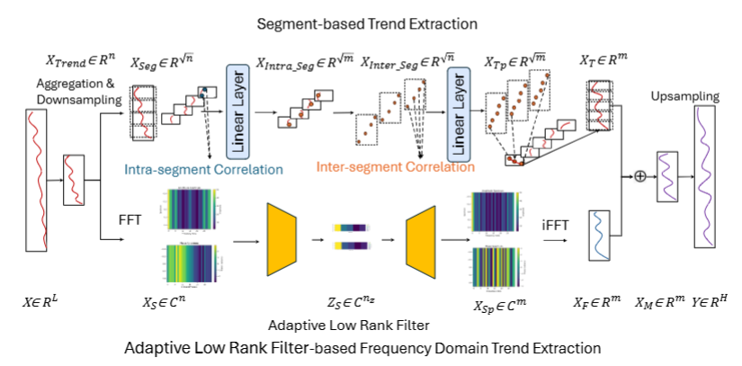

Aitian Ma (马艾田)
Ph.D. Candidate in Computer Science
Knight Foundation School of Computing and Information Sciences
Florida International University
📠Miami, FL, USA
🯠On the Job Market (2025-2026)
Knight Foundation School of Computing and Information Sciences
Florida International University
📠Miami, FL, USA
I am a Ph.D. candidate at Florida International University, advised by Dr. Mo Sha. My research focuses on making wireless sensing and communication systems more reliable, efficient, and intelligent through AIoT and edge learning. My AI-related work is co-advised by Dr. Dongsheng Luo. Before joining FIU, I earned my M.S. from Beijing University of Technology.
Conference Papers
Journal Paper
Best Paper Awards
| Visual | Publication Details |
|---|---|
|
🔬
|
🔷 LLM-Based Noise-Aware Domain Adaptation Agent for Industrial Wireless Mesh Network Configuration
📅 Under Review
|
|
🤖
|
🔷 Zero-shot Industrial Wireless Mesh Network Configuration via Dual-Mind LLMs
📅 Under Review
|
| Visual | Publication Details |
|---|---|
|  |
🔷 MixLinear: Extreme Low-Resource Multivariate Time Series Forecasting with 0.1K Parameters
📄 ICLR 2026
|
|
📅 Proceedings of the 41st ACM/SIGAPP Symposium on Applied Computing (SAC'26)
📊 Acceptance Ratio: 26/104 = 25%
|
|

|
📅 IEEE ICMLA, Special Session on Deep Learning and Applications, December 2025
📊 Acceptance Rate: 16.6% (15/90)
|

|
📅 IEEE DCOSS-IoT, June 2025
📊 Acceptance Rate: 23.6% (26/110)
🆠Best Paper Award Nominee
|
|
📅 IEEE MetroLivEnv, June 2025
|
|

|
📅 Proceedings of the 40th ACM/SIGAPP Symposium on Applied Computing (SAC'25)
📊 Acceptance Rate: 23.8% (5/21)
|

|
📅 IEEE ICCCN, July 2024
📊 Acceptance Rate: 29.9% (47/157)
|

|
📅 ICLR, May 2024
📊 Acceptance Rate: 31.1% (2260/7262)
|
|
📅 AI4TS Workshop, August 2023
🆠Best Paper Award
|
| Visual | Publication Details |
|---|---|

|
📅 IEEE/ACM Transactions on Networking
📖 Vol. 32, Issue 3, pp. 1983–1998, June 2024
|
|
|
🔷 Sensorless Air Temperature Sensing Using LoRa Link Characteristics
📄 Under Review at ACM Transactions on Sensor Networks (TOSN)
🔄 Major Revision
|
| Year | Award |
|---|---|
| 2025 | 🌟 Young Gladiators Fellowship, Northeastern University |
| 2025 | 🆠Best Paper Award Nominee, IEEE DCOSS-IoT |
| 2025 | 📠FIU UGS Travel Award for the Academy of Science, Engineering, and Medicine of Florida (ASEMFL) Annual Conference |
| 2023 | 🆠Best Paper Award, AI4TS Workshop |
| 2011 | 🥉 3rd Place, Microsoft HPC Campus Programming Competition |
| 2007-2008 | 📠National Encouragement Scholarship, Henan Agricultural University |
Knight Foundation School of Computing and Information Sciences
Mentors: Daniel Dajun Zeng, Yihua Du
Mentor: Ge Jiang
| Course | Title | Semester |
|---|---|---|
| COP 4338 | Programming III | Fall 2024 |
| COP 5522 | Parallel and Distributed Computing | Spring 2024 |
| COP 4710 | Database Management | Fall 2023 |
| CEN 4010 | Software Engineering | Spring 2023 |
| COP 4610 | Operating Systems | Fall 2022 |
| Category | Technologies |
|---|---|
| 💻 Programming | Python C/C++ Java SQL CUDA JavaScript |
| 🤖 ML Frameworks | PyTorch TensorFlow Distributed Training Model Optimization |
| ğŸ› ï¸ Systems | Docker Kubernetes Spark Kafka Elasticsearch Neo4j PostgreSQL |
| 🯠Focus Areas | Wireless Sensing Edge AI Resource-Efficient Learning |
| 📊 |
IEEE Transactions on Knowledge and Data Engineering
|
| 💻 |
IEEE Transactions on Computers
|
| 🧠|
IEEE Transactions on Neural Networks and Learning Systems
|
| 🔬 |
Measurement Science and Technology
|
| 🥠|
Computers in Biology and Medicine
|